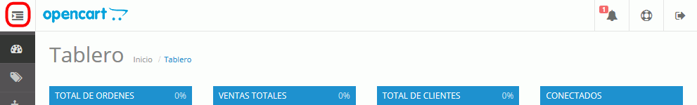
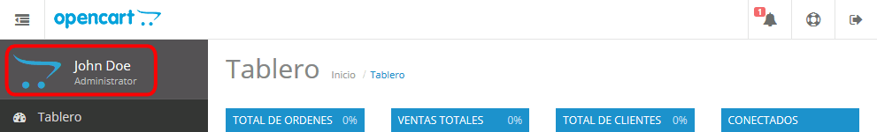
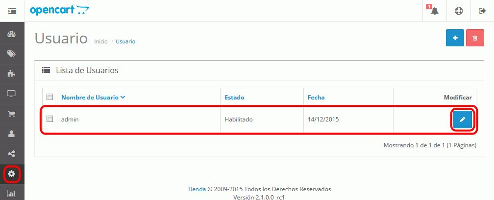
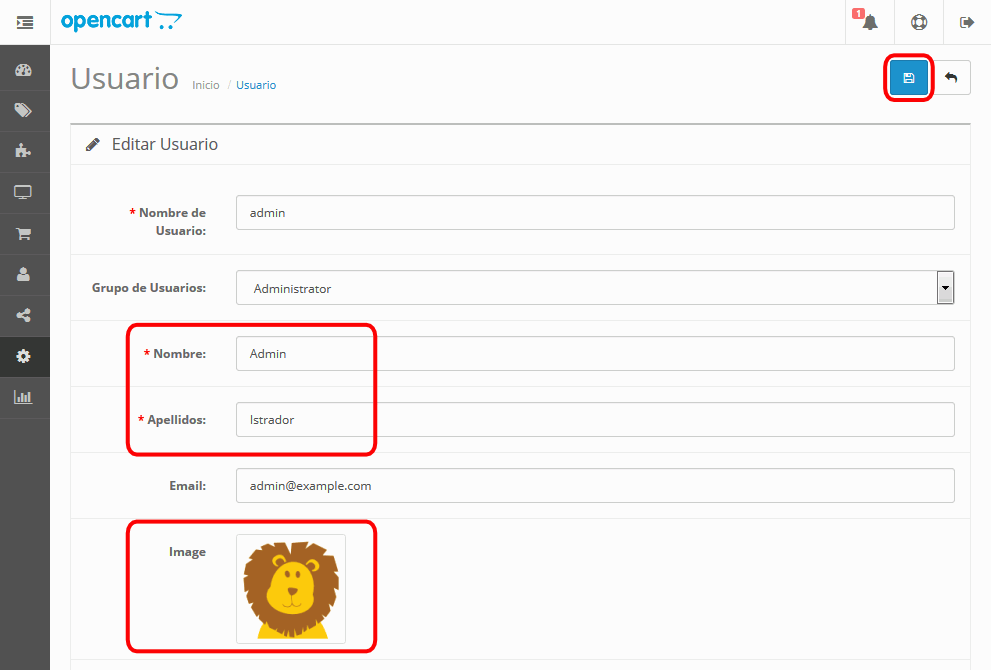

En esta lección se proponen soluciones detalladas de los ejercicios (3) de OpenCart. Se recomienda intentar realizarlos primero sin recurrir a estas soluciones.
OpenCart (3) 1 - Información de usuario Administrador
Entre en OpenCart como usuario administrador y haga clic en el icono que despliega el menú.

Se mostrará el nombre e imagen del usuario administrador:

Para modificar esta información, elija el menú Sistema > Usuarios > Usuario. Se mostrará la lista de usuarios. Haga clic en el botón Editar del usuario admin:

Escriba el nombre y apellidos del administrador, elija una imagen para su perfil y haga clic en Guardar:

Compruebe que se muestra la información actualizada: